I chose Kavunlu Natürmort because it is the clearest example of the "strong organic contours" type in the handout: one big melon whose upper outline is a long, smooth curve, plus a cut slice with a sharp lower edge. That made it a natural fit for Part D, where I trace a piecewise Bézier over the melon. The painting also has a light grey table top that runs away from the viewer, so it still gives me a perspective cue I can use for the camera (Part C and the camera-matching bonus).
The painting hangs in the scene as a textured quad of 4 × 2.79 units in the plane z = 0, centred at (0, 1.6, 0), inside a wooden frame built from four scaled cubes. In front of it I put a table (top at y = 0), an articulated desk lamp, a plate with an apple and a pear, and the Part A cube. Everything is drawn by one WebGPU application with no libraries; the only dev dependency is Vite. It runs with npm install && npm run dev, and npm test runs 24 unit tests for the maths (all passing).
Conventions used everywhere. Matrices are Float32Array(16) in column-major order (element (r, c) is m[c·4 + r]), so I upload them to the uniform buffer unchanged. I use column vectors (p′ = M·p), a right-handed world with y up, a camera looking down −z, and WebGPU clip space with z ∈ [0, 1].
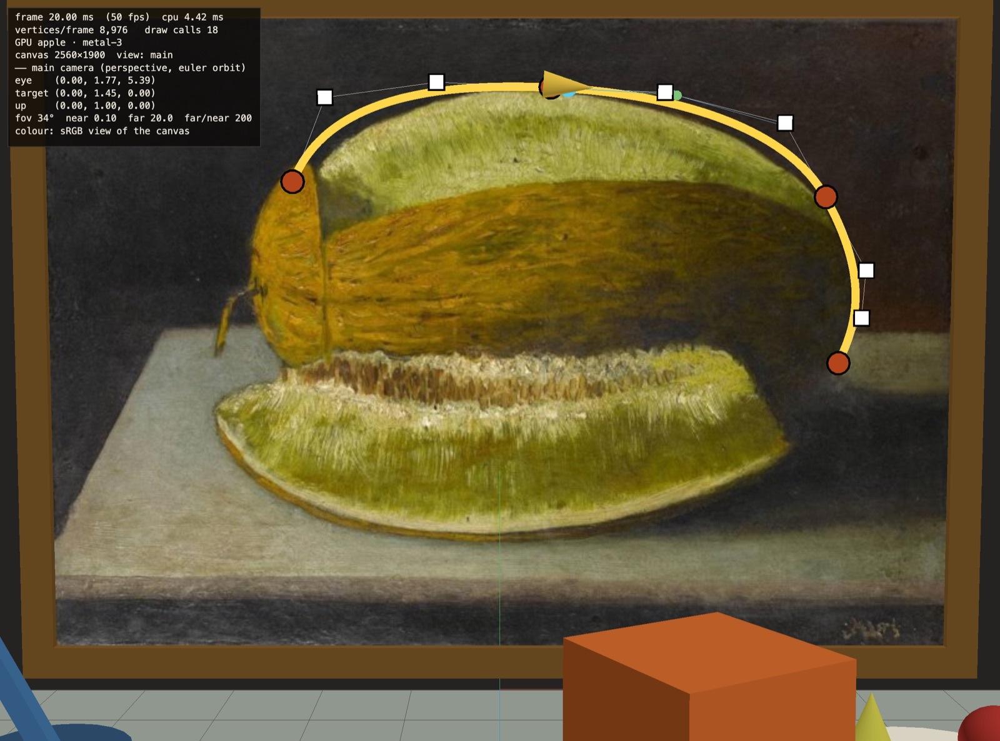
My matrix library (src/math/mat4.js) has identity, multiply, translate, rotateX/Y/Z, scale, transpose, transformPoint and the inverse of a rigid transform. For the rigid inverse I use the structure A = [R | t]: since R is orthonormal, R⁻¹ = Rᵀ, and from p′ = Rp + t I get p = Rᵀp′ − Rᵀt, so A⁻¹ = [Rᵀ | −Rᵀt]. That needs no general 4 × 4 inverse. The frustum drawing in Part C uses it to turn the camera’s view matrix back into a camera-to-world matrix.
The orange cube is the UI-controlled object (translation x/y/z, rotation axis and angle, uniform scale). A switch selects M = T·R·S or M = S·R·T, and the bottom-left panel prints both matrices all the time. The other objects (lamp, plate, apple, pear, frame pieces) are placed with the same functions through the scene graph.
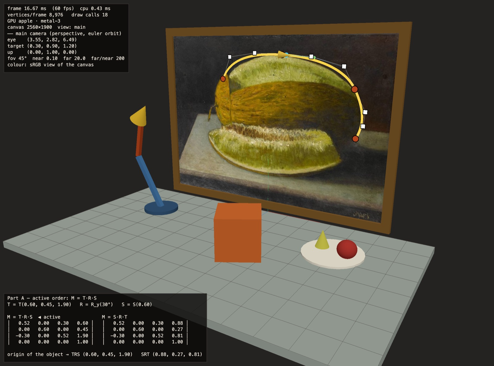
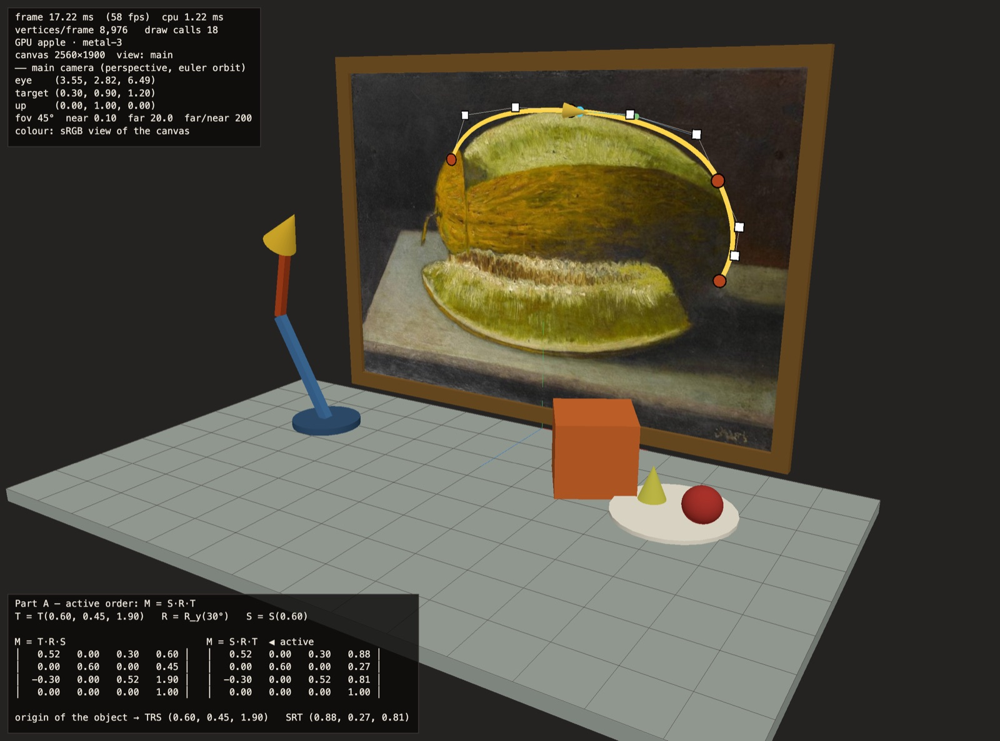
Why the two orders differ. With column vectors the right-most matrix acts first. In T·R·S the cube is scaled and rotated about its own centre and only then moved, so the last column of M is exactly the translation (0.60, 0.45, 1.90). In S·R·T the cube is moved first, and the rotation and scale then act on that translation too: the translation vector gets rotated by 30° about y and shrunk by 0.6, which ends up at (0.88, 0.27, 0.81), visibly closer to the painting and lower. The upper-left 3 × 3 block (R·S) is identical in both, because a uniform scale commutes with a rotation; only the translation column changes. I use M = T·R·S everywhere else in the project (scene-graph locals are written as T·R and per-node shape scales are applied last), because it lets me think of every object as “shape it at the origin, then put it somewhere”, and translations keep the units I typed into the UI.
A SceneNode (src/scene/node.js) stores a local matrix, a parent, a list of children and a world matrix. updateWorld() does a depth-first traversal with world(n) = world(parent) · local(n). Each node also has an optional shape matrix that is applied only to its own mesh and is not inherited. Without it, stretching a unit cube into a lamp arm would also stretch the lamp head the arm carries. The tree has 18 nodes and 7 levels (root → table → lamp-base → arm1 → arm2 → head → bulb). Three joints of the lamp and the plate are animated, and the debug toggle draws the local x/y/z axes of every node.
root ├─ painting T(0, 1.6, 0) │ └─ frame-top/-bottom/-left/-right T(…) ├─ partA-object T·R·S or S·R·T (UI) ├─ table T(0, −0.05, 1.6) │ ├─ lamp-base T(−1.7, 0.05, −0.7)·R_y(θ0(t)) ←anim │ │ └─ lamp-arm1 T(0, 0.05, 0)·R_z(θ1(t)) ←anim │ │ └─ lamp-arm2 T(0, 1.0, 0)·R_z(θ2(t)) ←anim │ │ └─ lamp-head T(0, 0.8, 0)·R_z(−2.0) │ │ └─ lamp-bulb T(0.12, 0, 0) ← leaf │ ├─ plate T(1.6, 0.05, −0.6)·R_y(0.5t) ←anim │ │ ├─ apple T(0.22, 0.15, 0.05) │ │ └─ pear T(−0.2, 0.14, −0.1)·R_z(π/2) │ └─ sweep surface of revolution (bonus) └─ curve-rider T(C(t))·R_z(atan2 C′(t))
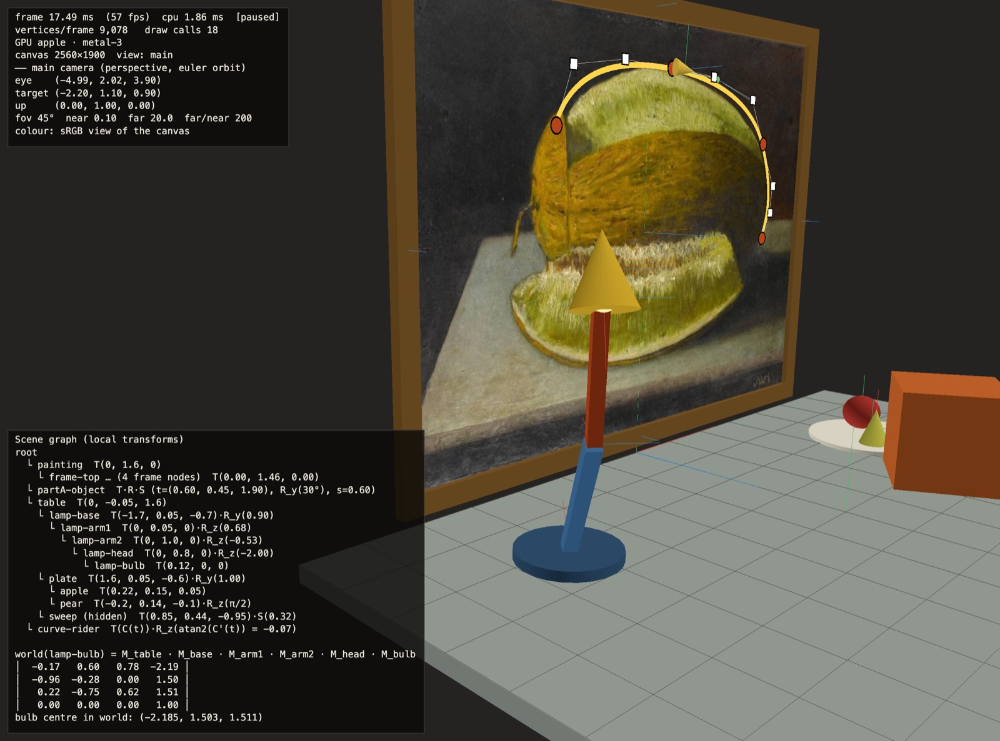
World matrix of the leaf, checked by hand. In the paused frame of Fig. 4 the joint angles are θ0 = 0.90, θ1 = 0.680, θ2 = −0.533 (the panel rounds them). world(bulb) = Mtable·Mbase·Marm1·Marm2·Mhead·Mbulb. I checked it in two parts:
world(lamp-bulb) printed by the program by hand │ −0.17 0.60 0.78 −2.19 │ col 0 (−0.1725, −0.9607, 0.2174) │ −0.96 −0.28 0.00 1.50 │ col 2 ( 0.7833, 0, 0.6216) │ 0.22 −0.75 0.62 1.51 │ col 3 (−2.185, 1.504, 1.511) │ 0.00 0.00 0.00 1.00 │ max difference 1.1·10⁻⁴ (rounding of the angles)
The camera looks down its −z axis, so its +z axis points from the target back to the eye:
u (right) is the first cross product and v (true up) the second; v is already unit length because w ⊥ u. The camera-to-world matrix is the rigid transform C = [u v w | eye]. The view matrix is its inverse, which by the Part A result is V = [Rᵀ | −Rᵀ·eye]: the rows of V’s rotation are u, v, w and the translation is (−u·eye, −v·eye, −w·eye). The tests check that V maps the eye to the origin and the target to (0, 0, −‖target − eye‖).
Degenerate case. If up is parallel to the view direction (looking straight down), up × w = 0 and normalising it gives NaN. In that case I cross w with whichever world axis is least aligned with it. The “Look straight down” button shows this case: the image in Fig. 7 rotates by an arbitrary amount around the view axis, but no NaN appears and the HUD prints a warning. With the quaternion orbit (bonus) this never happens, because there up is rotated together with the camera.
For a view-space point (x, y, z) with z < 0 and f = 1 / tan(fovY / 2), I want xndc = (f/aspect)·x / (−z) and yndc = f·y / (−z), so the fourth row of P is (0, 0, −1, 0), giving wclip = −z. For depth I need zndc = (A·z + B)/(−z) with z = −n ↦ 0 and z = −f ↦ 1:
OpenGL’s matrix maps depth to [−1, 1]; in WebGPU that would clip away everything in the front half of the depth range, so the depth row has to be different. The orthographic matrix is linear on every axis: x ↦ 2(x − l)/(r − l) − 1 (same for y), and z ↦ (z + n)/(n − f), which sends −n to 0 and −f to 1. The renderer clears depth to 1.0 and uses less.
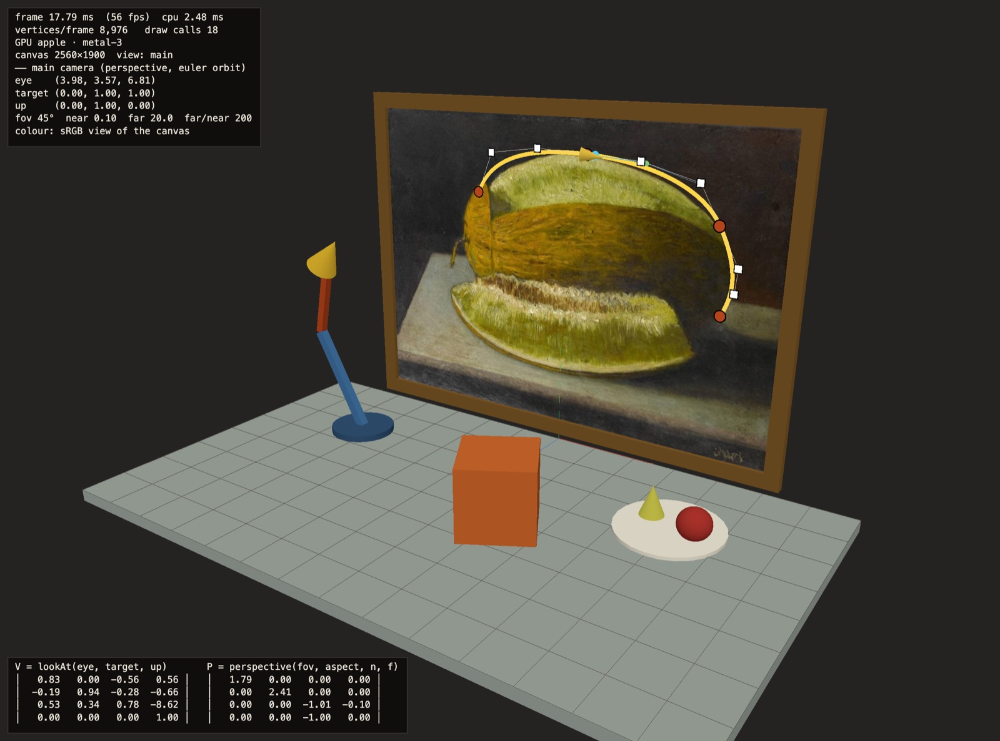
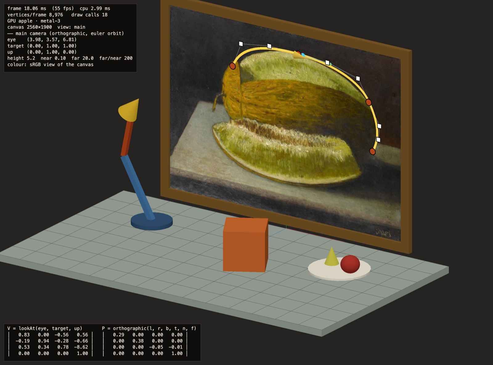
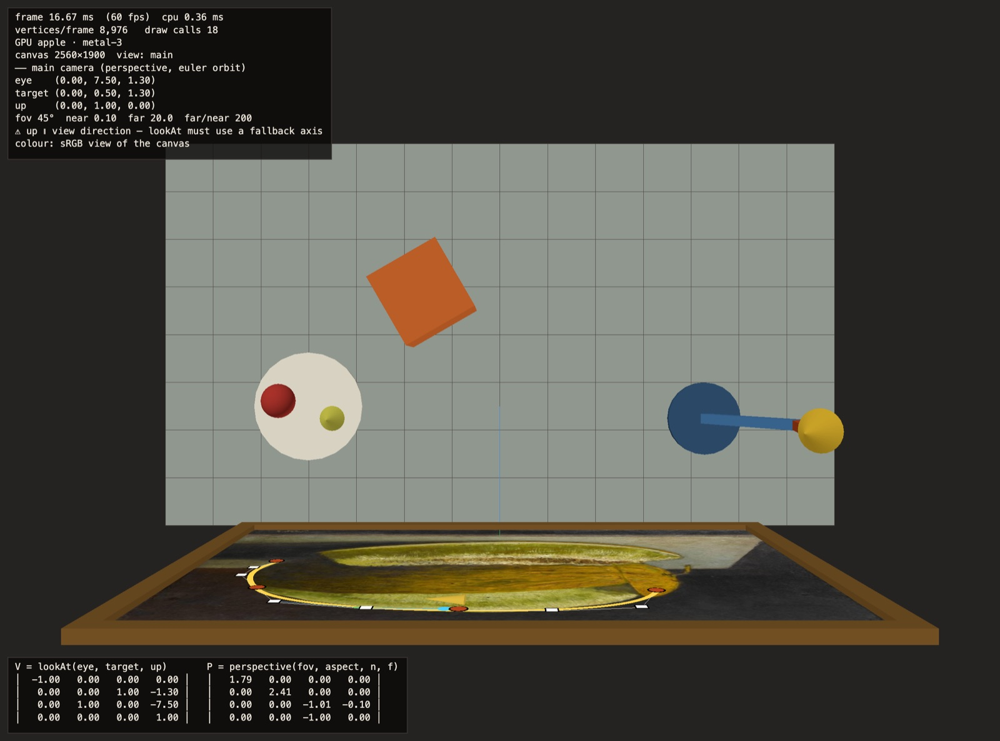
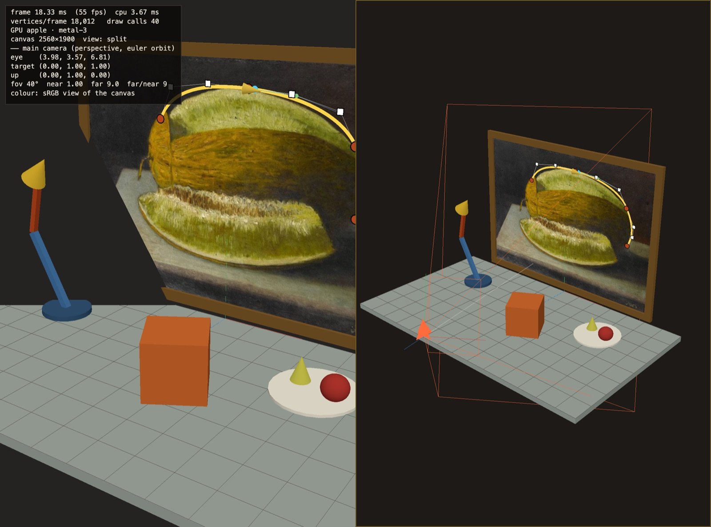
The mouse orbits the main camera around its target (wheel = zoom), and the HUD always shows eye, target, up, fov, near and far. The second camera is fixed at (7.5, 6.2, 9.5) looking at the table. It can be shown as an inset, in a split view, or full screen. Each view is its own render pass with its own depth clear.
Near/far and depth precision. I use near = 0.1 and far = 20. The scene is about 6 units deep and the default camera is about 8 units away, so far = 20 leaves room for zooming out. Because zndc is hyperbolic in distance, half of the depth range [0, 0.5] is used up before d = 2nf/(n + f) ≈ 0.2. With a 24-bit depth buffer the smallest depth step at distance d is about Δd ≈ d²(f − n)/(f·n·2²⁴):
| near / far | zndc at d = 5 | Δd at d = 5 | Δd at d = 10 |
|---|---|---|---|
| 0.1 / 20 (mine) | 0.985 | 1.5·10⁻⁵ | 5.9·10⁻⁵ |
| 0.01 / 200 | 0.998 | 1.5·10⁻⁴ | 6.0·10⁻⁴ |
| 1 / 20 | 0.842 | 1.4·10⁻⁶ | 5.7·10⁻⁶ |
Precision depends mostly on near: dividing near by 10 makes the steps 10× coarser. My curve overlay sits only 0.01 in front of the painting, which is still about 170 depth steps at d = 10 with my values, but it gets close to z-fighting with 0.01 / 200. I did not choose near = 1 because then the camera clips the table when I zoom in.
Cubic Bézier and its basis. B(t) = Σi Bi(t)·Pi with the Bernstein polynomials B₀ = (1−t)³, B₁ = 3(1−t)²t, B₂ = 3(1−t)t², B₃ = t³. They are non-negative on [0, 1] and add up to ((1−t) + t)³ = 1, so the curve stays inside the convex hull of its control points.
Proof that the curve starts at P₀ and ends at P₃. At t = 0: B₀(0) = 1 and B₁(0) = B₂(0) = B₃(0) = 0, because each of them has a factor t. So B(0) = P₀. At t = 1: B₃(1) = 1, and B₀, B₁, B₂ all contain the factor (1 − t), so they are 0. So B(1) = P₃. ∎
Derivative and the C¹ condition. Differentiating gives B′(t) = 3(1−t)²(P₁ − P₀) + 6(1−t)t(P₂ − P₁) + 3t²(P₃ − P₂), so B′(0) = 3(P₁ − P₀) and B′(1) = 3(P₃ − P₂). In my piecewise curve the control list is [K₀, H, H, K₁, H, H, K₂, H, H, K₃]: 10 points and 3 segments, where segment i uses points 3i…3i+3. At an interior knot K = P3i the left segment ends with tangent 3(K − P3i−1) and the right one starts with 3(P3i+1 − K). C¹ continuity means these are equal:
So the two handles must be opposite each other and the same length. enforceC1() applies this after every drag: when I drag one handle, the handle on the other side of the joint is mirrored, and when I drag a knot, both its handles move with it. The read-out shows the C¹ residual at both joints, which stays at about 10⁻⁴ (the rounding of the stored coordinates). de Casteljau is implemented separately: it repeatedly linearly interpolates neighbouring points at t until one point is left, and the three intermediate levels are drawn for the segment that contains the global parameter t (light blue, green and orange in Fig. 10). The tests check that its last point equals B(t).
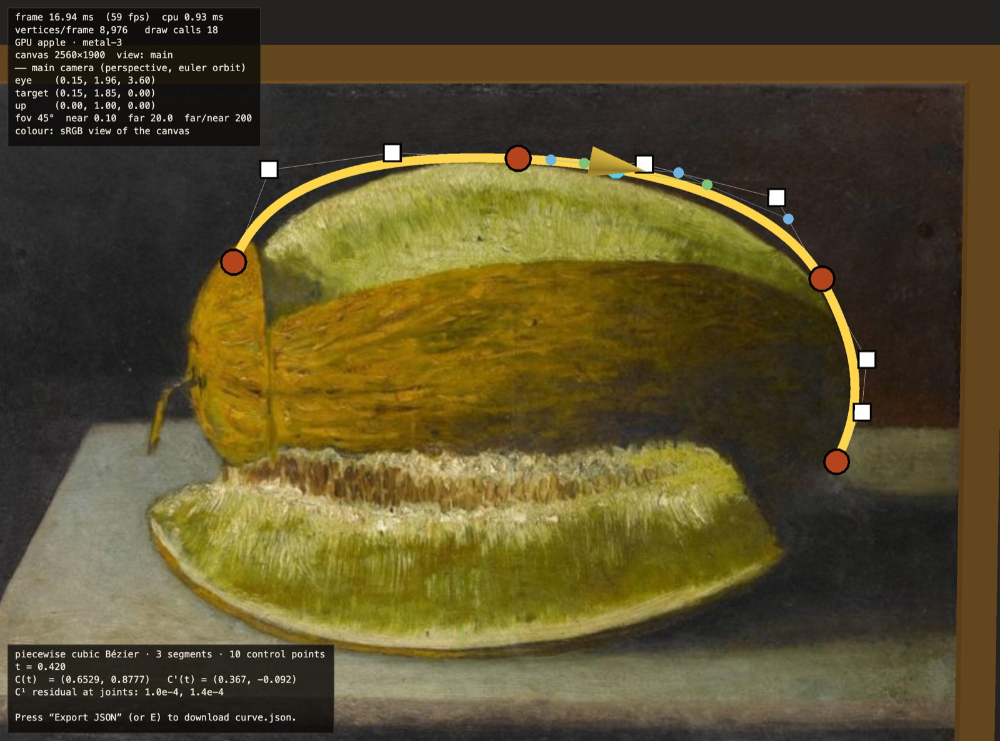
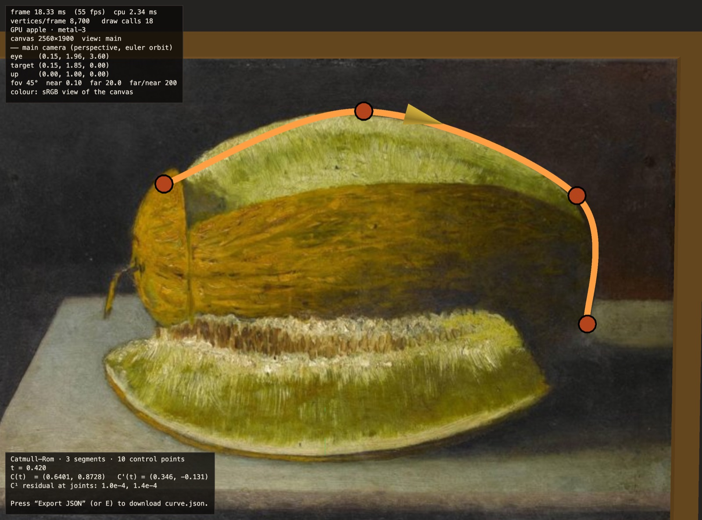
Second curve family, interaction, animation, export. For the second family I chose the uniform Catmull–Rom spline, C(t) = ½[2P₁ + (P₂ − P₀)t + (2P₀ − 5P₁ + 4P₂ − P₃)t² + (−P₀ + 3P₁ − 3P₂ + P₃)t³]. At the two ends I repeat the end knot as its own neighbour. Control points live in normalised painting coordinates. A mouse click becomes a ray built from the camera basis (u, v, w, fov), and the ray is intersected with the plane z = 0, so points can be placed and dragged in the plane of the painting from any camera angle. “Place new curve” only accepts 10 or more points (at least three segments) and trims the list to 3n + 1. A small cone rides the curve: it is translated to C(t) and rotated by atan2 of the tangent. The tangent first has to be scaled by the painting’s width and height, because the normalised coordinates stretch x and y differently. “Export JSON” downloads curve.json (Appendix A).
Everything is one page. The code is split into math/ (my maths), scene/ (nodes, meshes, curve model), render/ (device, pipelines, shaders, compute ribbon) and ui/ (panel, HUD, orbit, picking). The panel has a section per Part, view switching (inset, split, main only, inspection only), “Reset scene” (also R), and toggles for every debug drawing (node axes, frustum, grid, control polygon, de Casteljau, control points). The HUD shows frame time, the CPU time of my frame code, vertices submitted per frame and draw calls. The README lists every control.
The renderer gives every draw its own 256-byte slot in one uniform buffer, selected with a dynamic offset, so a frame needs a single writeBuffer for all MVPs. The painting is an rgba8unorm-srgb texture and lighting is done in linear space. Output is encoded by an sRGB view of the canvas, or by the shader when a browser does not offer that view.
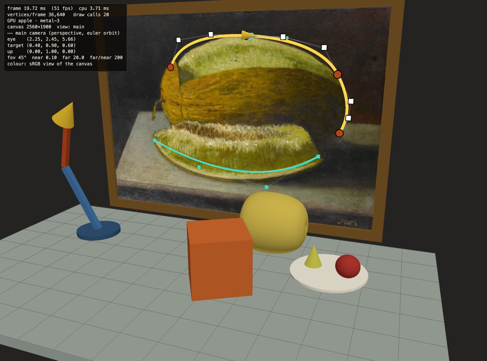
Measured frame times on a MacBook Air, Apple M4 (10-core GPU, Metal 3), macOS 15.5, Chrome 157, canvas 2560 × 1900 device pixels, averaged over 60 frames:
| Configuration | frame (ms) | CPU per frame (ms) | vertices / frame | draw calls |
|---|---|---|---|---|
| Main view only, perspective | 16.67 | 0.68 (max 0.90) | 8,976 | 18 |
| Main + inspection inset (default) | 16.70 | 0.72 (max 0.90) | 18,012 | 40 |
| Split view + node axes | 16.67 | 0.76 (max 1.00) | 18,216 | 40 |
| Split + axes + sweep + GPU ribbon + fit | 16.67 | 0.76 (max 0.90) | 73,556 | 44 |
The frame time is locked to the 60 Hz display (vsync), so the more useful number is my own CPU time per frame: under 1 ms in every configuration. The GPU work is tiny, as even the heaviest setup submits about 74 k vertices. Most of the vertex count comes from the surface of revolution (3 × 32 × 48 quads) and from drawing every mesh twice when the inspection view is visible.
{
"painting": {
"artist": "Şeker Ahmed Paşa",
"title": "Kavunlu Natürmort",
"collection": "Sakıp Sabancı Museum"
},
"coordinates": "normalised painting coordinates: (0,0) = bottom-left, (1,1) = top-right",
"curveType": "piecewise cubic Bezier",
"segments": 3,
"continuity": "C1: handles mirrored about every interior knot (P[k+1] = 2 P[k] - P[k-1])",
"layout": "knots at indices 0, 3, 6, ...; segment i uses controlPoints[3i .. 3i+3]",
"controlPoints": [
{ "i": 0, "x": 0.2722, "y": 0.745, "role": "knot" },
{ "i": 1, "x": 0.3083, "y": 0.8765, "role": "handle" },
{ "i": 2, "x": 0.4306, "y": 0.9004, "role": "handle" },
{ "i": 3, "x": 0.5556, "y": 0.8924, "role": "knot" },
{ "i": 4, "x": 0.6806, "y": 0.8845, "role": "handle" },
{ "i": 5, "x": 0.8125, "y": 0.8367, "role": "handle" },
{ "i": 6, "x": 0.8583, "y": 0.7211, "role": "knot" },
{ "i": 7, "x": 0.9042, "y": 0.6056, "role": "handle" },
{ "i": 8, "x": 0.9, "y": 0.5299, "role": "handle" },
{ "i": 9, "x": 0.875, "y": 0.4582, "role": "knot" }
],
"exportedAt": "default trace (re-export your own from the app)"
}
As required by section 4 of the handout, this is a complete list of the AI tools I used. I used one tool, Claude Code (Anthropic) in the Claude desktop app, for every step below. The handout's own explorer page and the course's starter assets were the only other sources.
| Step | What I asked for | What I kept |
|---|---|---|
| Repository setup | Cloning my empty GitHub repository, setting up the Vite project (package.json, .gitignore, folder layout math/ scene/ render/ ui/) and extracting the painting from the explorer page into public/kavunlu.jpg. | All of it. |
| Application code | The WebGPU renderer and shaders, scene graph, UI panel and HUD, mouse picking and curve editing, the compute-shader ribbon, the unit tests and the README. After the deadline had passed: the matrix, camera and curve functions in src/math/ and the remaining bonus maths (least-squares fit, quaternions, WGSL Bézier). | All of the generated code, unchanged. |
| Checking | Running the tests and the app in a browser, finding and fixing the bugs listed in section 8, and going through the handout requirement by requirement (which led to the three fixes described there). | All fixes. |
| Comments and report | Rewriting the code comments in my own voice and drafting this report from screenshots and measurements taken in the running app on my machine. | The report draft and comments, unchanged. |
| Git: commits, pushes, tag | Every commit and push to GitHub, made under my name. This includes rewriting the first commit and force-pushing it to remove the AI co-author line from the commit message, rebasing onto a README edit I made on GitHub, retrying pushes that failed on the network, and creating and later moving the project1-final tag. | All of it. |